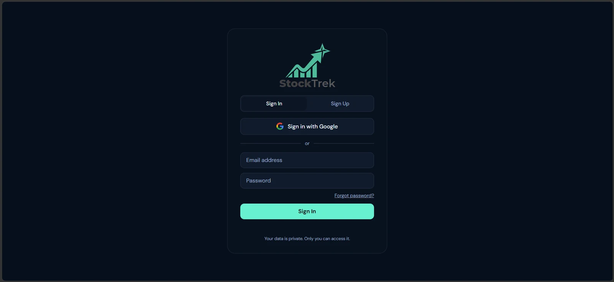
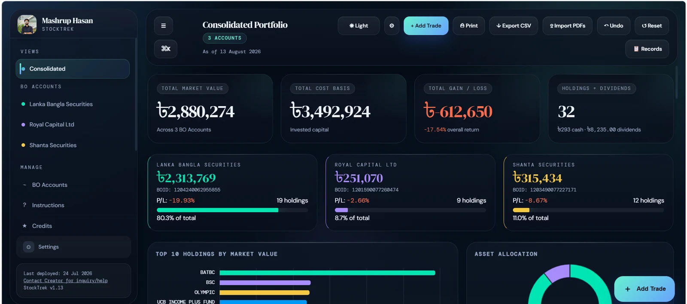
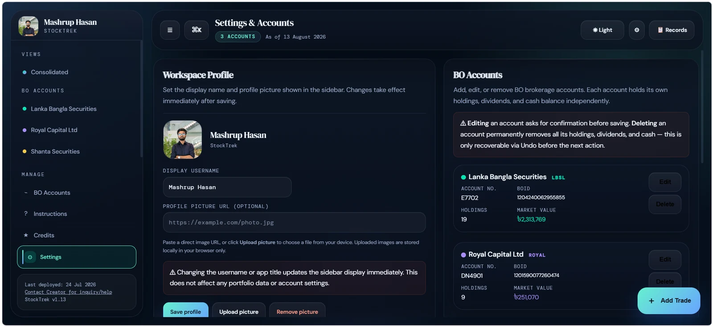
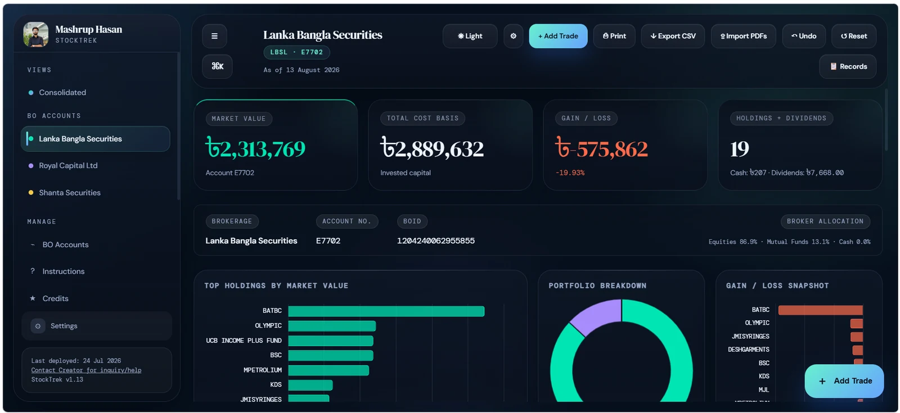

A browser-based investment dashboard that consolidates multiple Beneficiary Owner (BO) accounts for Bangladesh stock-market (DSE/CSE) investors into one unified view of gain/loss, allocation, and dividend history.
RoleIndependent Project
StackJavaScript · Chart.js · localStorage
MarketDSE / CSE, Bangladesh
Overview
Retail investors in Bangladesh's stock market often hold securities across more than one Beneficiary Owner (BO) account with different brokers, with no single place to see combined performance. Reconciling gain/loss, allocation, and dividend income across accounts is typically a manual, spreadsheet-driven chore repeated at every broker's end-of-day statement.
StockTrek runs as a single self-contained HTML file, no install, no build step, no backend. Chart.js handles the visualizations and every update is written straight to the browser's localStorage, so it opens and runs immediately and all data stays on the user's machine.




Sign In
Features
Multi-account consolidation — merges holdings across every BO account into one view, with weighted-average cost and unified P&L.
PDF statement import — auto-detects the account by BOID and syncs prices, shares, cost basis, cash, and dividends straight from LankaBangla Securities, Royal Capital, or Shanta Securities statements.
Manual trade entry — buy, sell, or overwrite any holding, including mutual/unit funds and cash positions.
Dividend & historical tracking — every update is saved as a timestamped snapshot, so each holding and account carries its own price and P&L history.
Charts & analytics — asset-allocation donut, broker-allocation bars, top-10 holdings by market value, and gain/loss breakdowns.
Export, print, and single-level undo — CSV export, browser print, and a safety net for the most recent destructive action.
Key Outcomes
Consolidates holdings from multiple BO accounts into a single gain/loss and asset-allocation view, a workflow most retail DSE/CSE investors otherwise build by hand in spreadsheets.
Automated PDF import and dividend tracking remove manual bookkeeping steps that are easy to lose track of across several brokers.
Historical performance charts let a user compare account-level returns over time instead of relying on isolated end-of-day broker statements.
Ships as a single client-side file with no backend to run or maintain, keeping it free to use and straightforward to extend.